GUIDE — 咬筋検査モード
咬筋検査モードの使い方──筋電計の数値の入力から結果報告書の印刷まで
口腔機能管理くんの「咬筋検査」モードで、表面筋電計で測った左右の咬筋の数値を記録して、結果報告書を印刷するまでを、実際の画面で順番に説明します。
サインインとPINの設定がまだの方は、先に「口腔機能管理くんの使い方（はじめての1人目）」の STEP 1 をご覧ください。
このページの画面は、バージョン 1.9.7 の iPad のものです。患者は架空の「見本 一郎」さん（42歳）で、数値と所見も説明用です。
iPhone・Android でも流れは同じです。Android の印刷・保存のメニューの違いは「はじめての使い方の STEP 6」に書きました。
POINTS — 先に知っておくと迷わないこと
- 咬筋検査は、筋電位・左右バランス・自覚症状・触診圧痛・その他所見を1つの画面で記録します
- 筋電計の最大値と作業の平均を左右とも入れると、左右差（%）と判定が自動で出ます
- 自覚症状は、患者モードにして iPad を渡せば、患者さんに直接答えてもらえます
- 評価の保存は長押し（約1秒）。患者モードとの切り替えも長押し（約2秒）です
- 咬筋検査には管理計画書の画面はありません。保存すると、結果報告書の印刷プレビューに進みます
STEP 1咬筋検査モードで患者さんを登録する
ホームで「咬筋検査」を選んで、患者さんを登録します。
- ホームの 咬筋検査 のカードを押します。患者一覧が開き、左上に「咬筋検査モード」と出ます。
- 右上の + 新規 を押します。
- 患者名を入れます。必須は患者名だけです。生年月日と性別も入れておくと、結果報告書に年齢と性別が出ます。
- 右上の 保存 を押します（普通に押すだけで保存されます）。
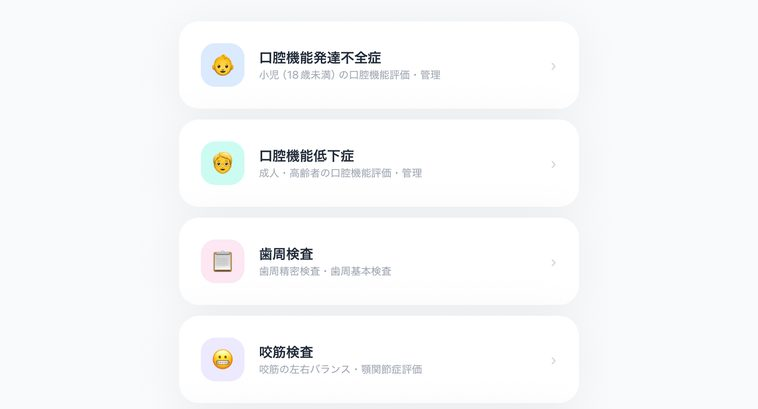
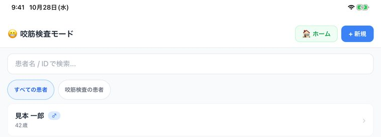
ほかのモードで登録した患者さんも、同じ一覧に出ます。すでに登録してある患者さんなら、登録し直さずにそのまま選べます。
STEP 2評価を始める
患者詳細から、咬筋検査の評価を始めます。
- 患者一覧で患者さんの名前を押すと、患者詳細が開きます。
- いちばん上の青いボタン 咬筋検査の新規評価を開始 を押します。
- 咬筋検査の画面が開きます。検査日を確かめます（今日の日付が入っています）。
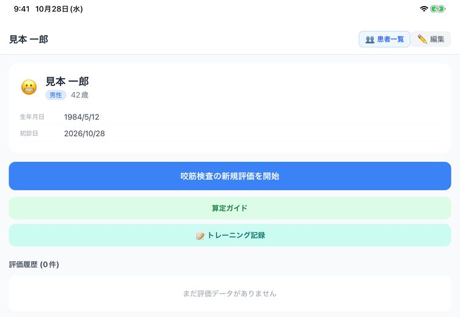
STEP 3自覚症状を患者さんに答えてもらう（患者モード）
痛みやしみる症状は、患者さんに iPad で直接答えてもらえます。
- 右上のオレンジのボタン 患者モードへ（長押し） を、約2秒押し続けます。
- 画面が「問診（患者さま用）」に変わり、自覚症状の質問だけが並びます。
- iPad を患者さんに渡して、咬筋痛・側頭筋痛・開口痛・顎疲労・頭痛・肩・首痛・睡眠障害を、0（症状なし）〜10（最もつらい）の数字で選んでもらいます。
- 歯がしみる症状（知覚過敏）があれば 有 を選び、しみる強さも 0〜10 で選んでもらいます。
- 戻ってきたら、右上の 医院モードへ（長押し） を約2秒押して、医院の画面に戻します。
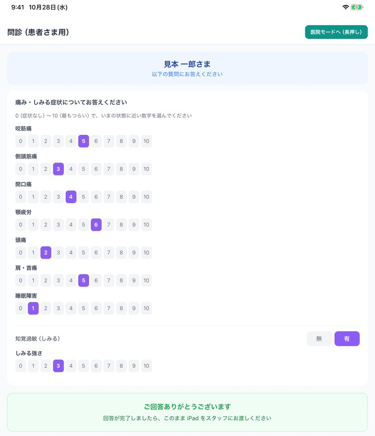
患者さんの答えは、医院の画面の「③ 自覚症状」にそのまま入ります。医院の画面に戻ってから、確かめて直すこともできます。同じ数字をもう一度押すと、選んだ数字を外せます。
患者モードでは、筋電位・触診・所見、保存のボタン、患者一覧のボタンは出ません。保存は医院モードに戻してから行います。
患者モードを使わずに、医院の画面の「③ 自覚症状」で、聞き取った数字をそのまま選んでもかまいません。
STEP 4筋電計の数値を入れる
表面筋電計で測った左右の咬筋の数値を、「① 筋電位」に入れます。
- 左咬筋の 最大値（μV） と 作業の平均（μV） を入れます。
- 右咬筋も同じように、最大値と作業の平均を入れます。
- 左右がそろうと（左右とも 0 のときを除く）、すぐ下に 左右差（最大値） と 左右差（平均値） が、%と判定（良好・境界・要注意）で出ます。
- その下に、咬筋活動量（左右の最大値の平均）が出ます。最大値が片側だけ（もう片側が空欄か 0）のときは、その片側の値で出ます。
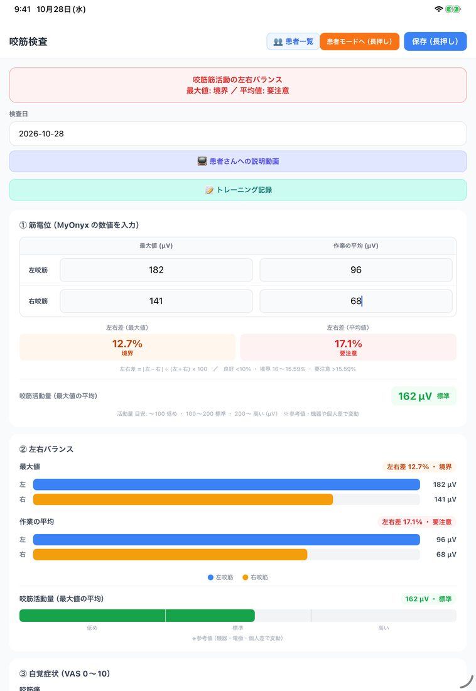
画面のいちばん上の帯には、最大値と平均値の判定がまとめて出ます。2つのうち悪いほうの色で表示されます（この例では「要注意」の赤）。
入力欄の見出しは MyOnyx ですが、数値は手で入れるので、左右の最大値と作業の平均が分かる機器なら、その値を入れられます。
数値の上にある 患者さんへの説明動画 からは、咬筋検査に関係する説明動画を患者さんに見せられます。
STEP 5左右バランスと自覚症状を確かめる
「② 左右バランス」のグラフと、「③ 自覚症状」を確かめます。
「② 左右バランス」には、最大値と作業の平均のそれぞれで、左（青）と右（オレンジ）の長さを比べるグラフが出ます。右上には左右差と判定、いちばん下には活動量のバーが出ます。
「③ 自覚症状」には、STEP 3 で患者さんが答えた数字が入っています。違っていれば、ここで直せます。
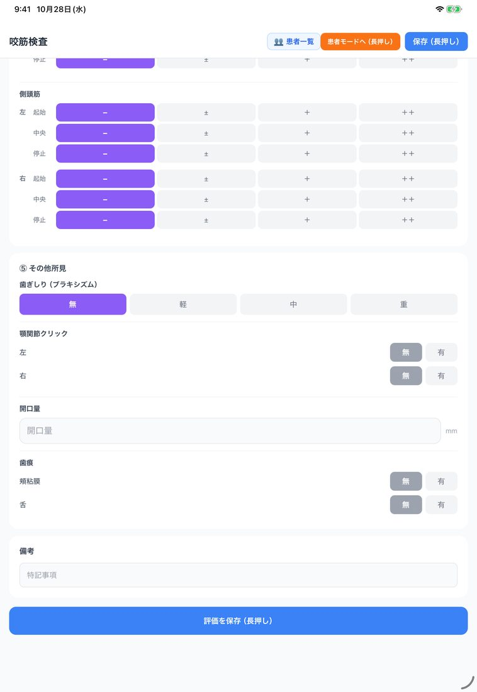
このグラフは、印刷プレビューにも同じ形で出ます。患者さんへの説明に、そのまま使えます。
STEP 6触診圧痛とその他所見を入れる
診察の所見を、「④ 触診圧痛」と「⑤ その他所見」に入れます。
- 「④ 触診圧痛」では、咬筋と側頭筋の左右それぞれ、起始・中央・停止の3か所を、− ± ＋ ＋＋ の4段階で選びます。はじめはすべて「−」です。
- 「⑤ その他所見」で、歯ぎしり（無・軽・中・重）、顎関節クリック（左右それぞれ無・有）、開口量（mm）、歯痕（頬粘膜・舌それぞれ無・有）を入れます。
- 必要なら、いちばん下の 備考 に書きます。
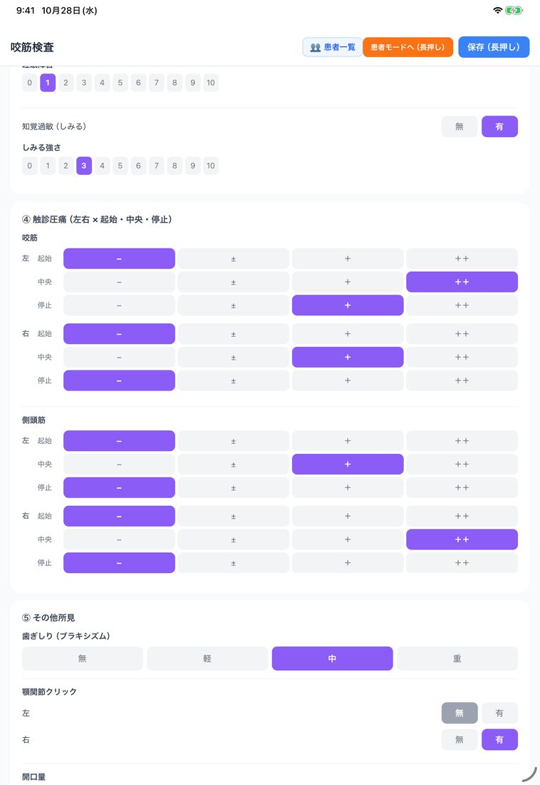
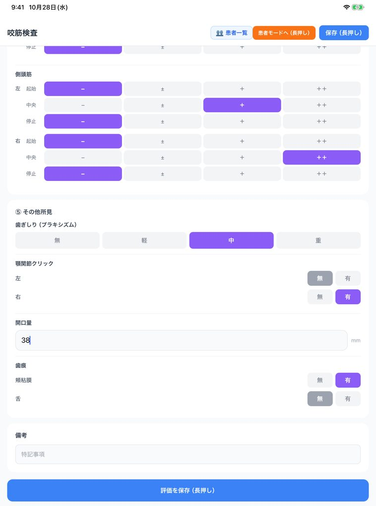
選んだボタンをもう一度押すと、「−」に戻ります。触診で押さえる強さや時間は、医院の決まった方法で行ってください。
STEP 7長押しで保存する
入力を確かめて、長押しで保存します。
- 右上の 保存（長押し） か、いちばん下の 評価を保存（長押し） を、約1秒押し続けます。
- 「保存完了」が出て、左右差（最大値・平均値）が表示されます。OK を押します。
- そのまま、結果報告書の印刷プレビューに進みます。
保存のボタンが長押しなのは、押し間違いを防ぐためです。普通に押しただけでは保存されません。
保存したあとで検査日を変えて保存し直すときは、並び順や前回の値の比較が変わるので、確認が出ます。
STEP 8PDFを作って印刷する
印刷プレビューで内容を確かめて、PDFを作ります。
- 印刷プレビューで、患者名・年齢・判定・グラフ・所見を確かめます。必要なら 担当医（この書類） に名前を入れます。
- 画面のいちばん下の PDFを保存 / 印刷 / 共有（長押し） を、約2秒押し続けます。
- PDFができて、共有のメニューが開きます。
- iPhone・iPad では プリント でAirPrint対応のプリンターから印刷、"ファイル"に保存 で端末やクラウドに保存できます。
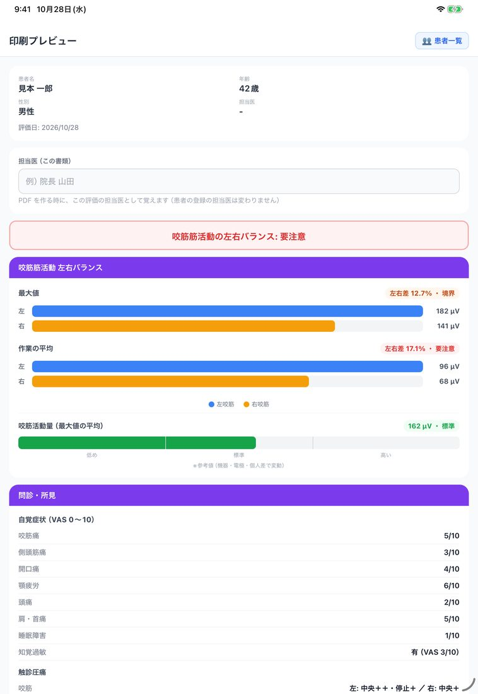
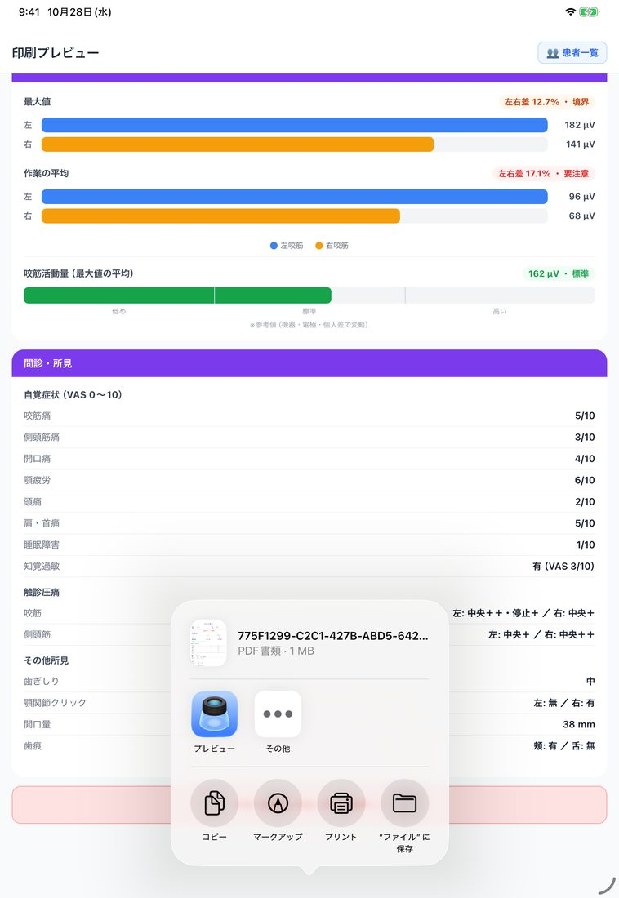
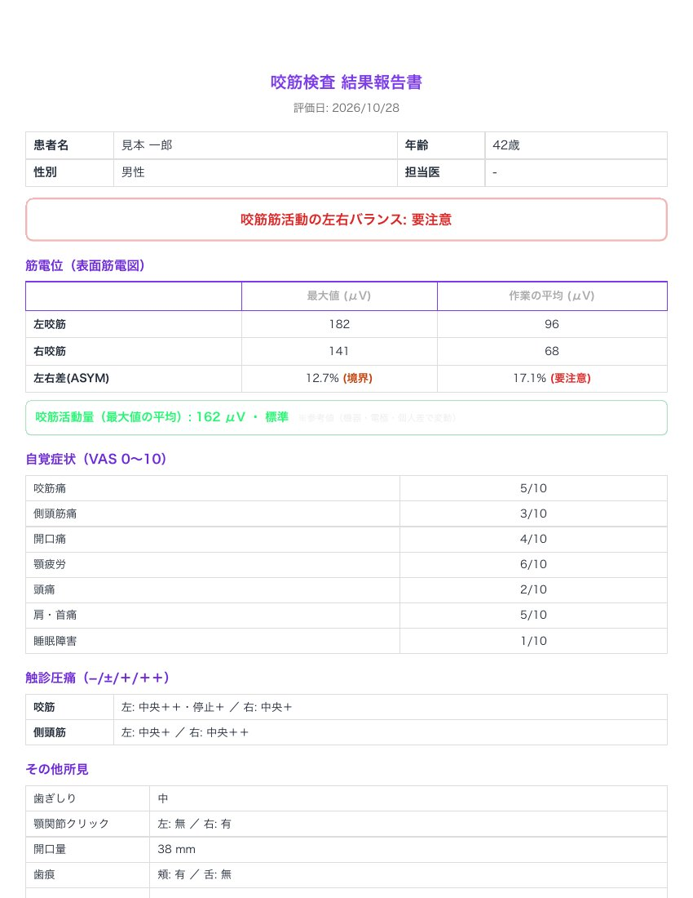
PDFは「咬筋検査 結果報告書」です。筋電位と左右差、咬筋活動量、自覚症状、触診圧痛、その他所見が1枚にまとまります。入れた項目が多いと、2ページ目に続きます。
患者IDや検査を担当した人の欄を入れるかどうかは、ホームの ⚙️ データ管理 の「管理計画書の設定」で選べます。
これで1回目の咬筋検査は完了です。
左右差と判定の見方
左右差は、|左 − 右| ÷（左 + 右）× 100 で計算します。最大値と作業の平均で、それぞれ計算して判定します。
| 画面の表示 | 左右差 |
|---|---|
| 良好 | 10% 未満 |
| 境界 | 10% 以上、15.59% 以下 |
| 要注意 | 15.59% を超える |
この例では、最大値が 182 と 141 で左右差 12.7%（境界）、作業の平均が 96 と 68 で左右差 17.1%（要注意）です。画面の上の帯と結果報告書には、悪いほうの「要注意」が出ます。
咬筋活動量は、左右の最大値の平均です（片側が空欄か 0 のときは、もう片側の値を使います）。目安は 100 μV 未満が「低め」、100〜200 μV が「標準」、200 μV を超えると「高い」ですが、機器・電極・個人差で変わる参考値です。
良好・境界・要注意の表示は、入れた数値から計算した目安です。診断は歯科医師が行ってください（このアプリは医療機器ではありません）。
2回目以降と算定ガイド
保存した評価は、患者詳細の評価履歴に、日付と判定（いちばん悪いもの）つきで並びます。行を押すと評価を開いて直せます。印刷 から、結果報告書をもう一度印刷できます。
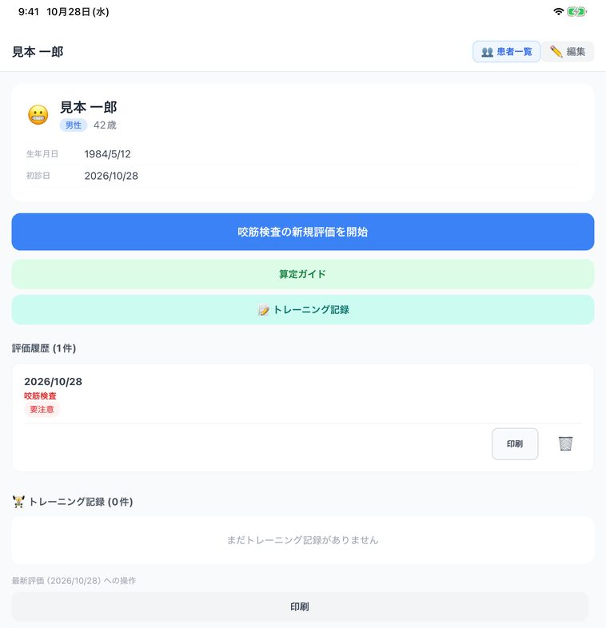
同じ患者さんに前の咬筋検査があるときは、筋電位の入力欄の下に前回の値が小さく出ます。前回とは、いま開いている評価を除いて、今回の検査日以前（同じ日を含む）でいちばん新しい咬筋検査のことです。その検査で入れてあった欄だけが出ます。前回の咬筋検査から1か月たつと、ホームの「そろそろ再検査の時期です」にも出ます。
患者詳細の 算定ガイド では、咬筋検査に関わる保険算定の項目と点数の目安を確かめられます。
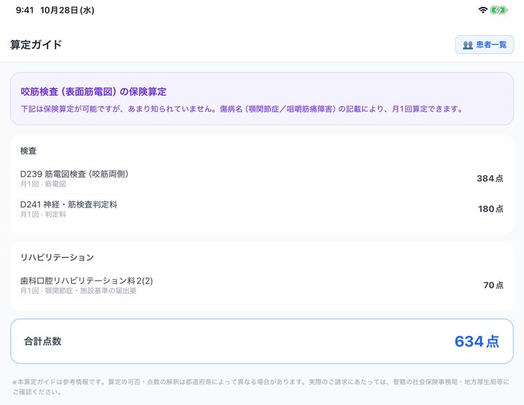
算定ガイドは参考情報です。算定の可否や要件（施設基準の届出など）は、告示・通知と管轄の厚生局等で確かめてください。
つまずいたとき（よくある質問）
患者モードから医院の画面に戻れません。
右上の 「医院モードへ（長押し）」を約2秒押し続けてください。患者さんが誤って戻らないように、切り替えは長押しにしています。
患者モードでは評価を保存できないので、医院モードに戻してから保存します。
「評価を保存」を押しても保存されません。
評価の保存ボタンは長押しです。約1秒押し続けてください。
患者モードになっているときは、保存のボタンが出ません。右上の「医院モードへ（長押し）」で戻してください。
左右差が「—」のままです。
左右差は、左と右の両方に数値が入ると出ます。最大値なら左右の最大値、平均値なら左右の作業の平均を、両方入れてください。
左右とも 0 のときは計算できないので、「—」のままです。
MyOnyx 以外の表面筋電計でも使えますか？
入力欄の見出しは MyOnyx ですが、数値は手で入れるので、左右の咬筋の最大値と作業の平均（μV）が分かる機器であれば、その値を入れられます。
左右差は入れた数値から計算します。活動量の目安は、機器・電極・個人差で変わる参考値です。
無料でどこまで使えますか？
患者の登録は無制限です。咬筋検査の評価は、評価を保存した患者4人まで無料で使えます。同じ患者の再評価や、保存済みの評価の修正は人数に数えません。
5人目の患者の最初の評価を保存するときに、有料プランへの登録が必要になります。料金はアプリ紹介ページをご覧ください。
ほかの質問（PINを忘れたとき、別の端末で使うときなど）は、「はじめての使い方のよくある質問」とサポートページをご覧ください。
口腔機能管理くん──口腔機能低下症・口腔機能発達不全症・歯周検査・咬筋検査の記録と、管理計画書の作成を支援するアプリです（医療機器ではありません。診断は歯科医師が行います）。
iPhone・iPad・Android。患者の登録は無制限、検査の評価は種類ごとに4人まで無料。
App Store Google Play アプリ紹介ページこのページは、アプリのバージョン 1.9.7（2026年10月時点）の画面と動作をもとに書いています。画面の文言や配置は、今後のアップデートで変わることがあります。患者名・数値・所見は説明用の架空のものです。